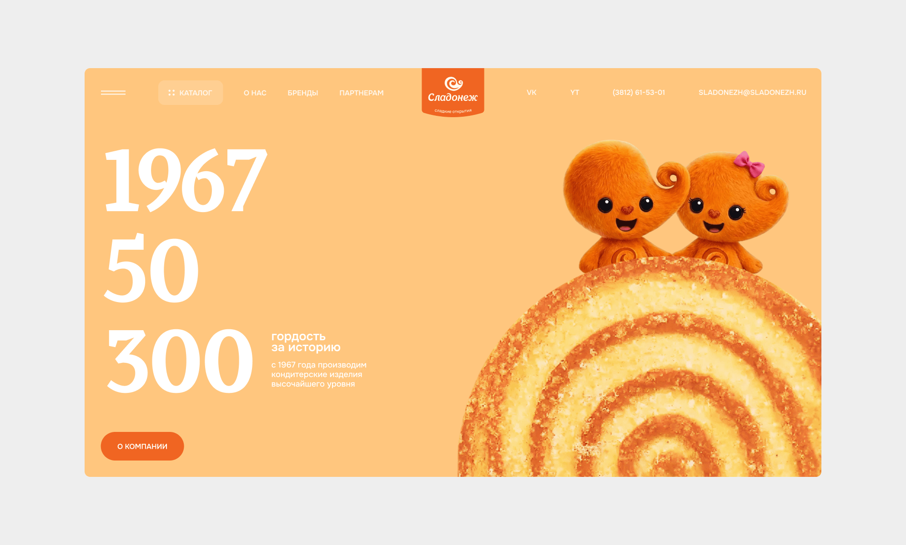
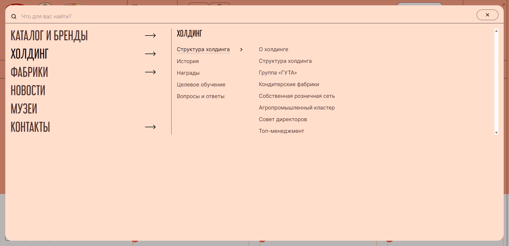
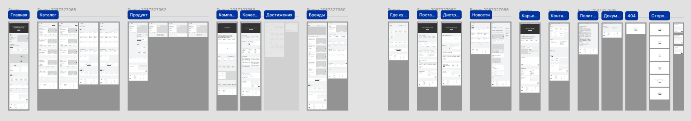
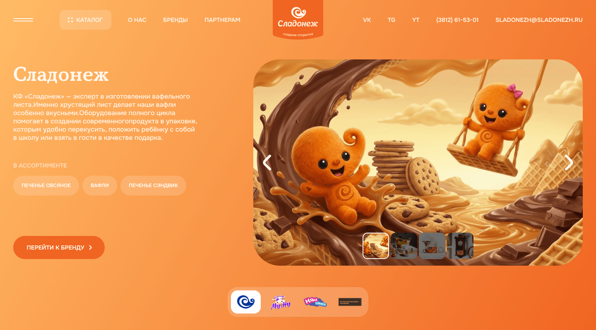
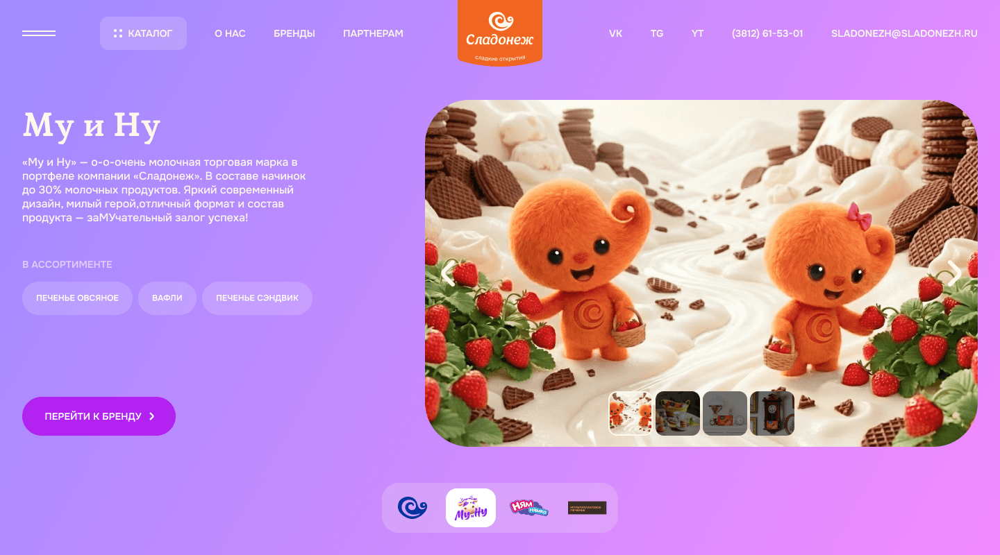
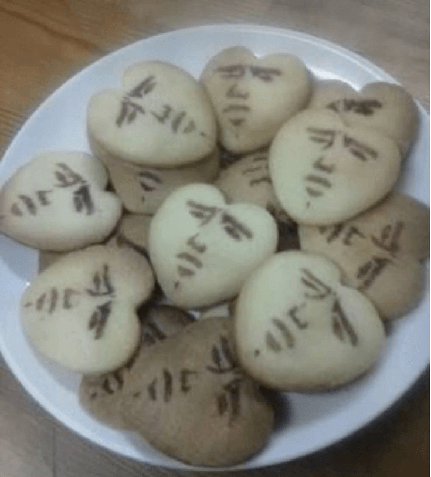

О проекте
«Сладонеж» - крупный производитель кондитерских изделий, представленный более чем в 50 городах России.
Компания обратилась к агентству после неудачного опыта работы с другой студией.

Задача
Создать новый сайт производителя, который:
- Презентует бренд.
- Демонстрирует ассортимент.
- Привлекает дистрибьюторов.
- Повышает доверие к продукции.

Цели проекта
Сайт должен был решать сразу несколько задач бизнеса:
- Демонстрировать ассортимент продукции.
- Повышать доверие к бренду.
- Привлекать новых дистрибьюторов.
- Упрощать взаимодействие с поставщиками.
При этом на сайте необходимо было интегрировать нового маскота бренда.
Моя роль
Я отвечал за раннюю продуктовую стадию проекта. Что я сделал:
- Провёл анализ бизнес-контекста.
- Исследовал целевую аудиторию.
- Проанализировал сайты конкурентов.
- Разработал информационную архитектуру.
- Спроектировал пользовательские сценарии.
- Разработал прототип сайта.
После согласования структуры участвовал в создании дизайн-концепции интерфейса.

Исследование аудитории
Мы выделили три ключевых сегмента пользователей:
Потребители
Покупают продукцию на маркетплейсах или в магазинах.
Барьеры:
- Сомнения в качестве продукции.
- Неизвестность бренда.
Дистрибьюторы
Ищут новые бренды для поставок в магазины.
Барьеры:
- Недоверие к новому поставщику.
- Недостаток информации о продукции.
Поставщики
Ищут производителей, которым можно поставлять сырьё.
Барьеры:
- Сложность выхода на контакт.
- Долгий цикл сделки.
Анализ конкурентов
Я изучил сайты производителей кондитерских изделий.
Основные проблемы:
- Устаревший дизайн.
- Сложная структура каталога.
- Отсутствие информации для партнёров.
Например, на многих сайтах дистрибьюторам сложно найти информацию о поставках и продукции.

Архитектура сайта

На основе исследований я разработал структуру сайта.
Ключевые разделы:
- Каталог продукции.
- Бренды.
- О компании.
- Качество.
- Дистрибьюторам.
- Поставщикам.
- Где купить.
- Новости.
- Карьера.
Всего было спроектировано 19 страниц прототипа.
Каталог продукции

Каталог должен был учитывать сложную структуру брендов.
Поэтому мы добавили два способа навигации:
- По категориям продукции.
- По брендам.
Карточка категории включает информацию о подкатегориях, каталог и рекомендуемые товары. Так пользователь сразу может перейти на нужную подкатегорию или карточку товара.

Карточка товара
Карточка продукта содержит информацию для разных аудиторий.
Для покупателей:
- Описание продукта.
- Состав.
- Вкусы.
Для дистрибьюторов:
- Тип упаковки.
- Количество продукции.
- Характеристики товара.
Такое разделение позволяет закрыть потребности разных аудиторий.

Решение для поставщиков
На странице «Поставщикам» мы добавили блок с категориями поставок.
Это помогает:
- Сразу отсечь нерелевантные заявки.
- Ускорить коммуникацию.
Клиент отдельно отметил удобство этого решения.

Концепция дизайна
Напомню, что использование нового маскота на сайте - обязательно.
Я начал думать, с чем у людей обычно ассоциируются печенья, вафли и другие сладости. Для себя описал это как тёплый вечер в кругу близких, где сладостями хочется поделиться.
«Большой кухонный стол, аромат душистого чая, тёплый вечер в кругу родных и любимых, а на столе - сладости, которыми так хочется поделиться со всеми».
Мне понравилась эта мысль: она отражала частотный паттерн потребления и вызывала сильную, знакомую всем эмоцию.
Дальше я подумал: а что если создать для Сладика подружку? Так удалось поддержать идею, что сладостями хочется делиться с близкими.
Я сгенерировал Сладику спутницу, и в итоге появился персонаж Сладуля, который сразу считывается и визуально, и по характеру образа.

Дизайн
На главной я расположил двух персонажей вместе. Сладик передаёт Сладуле упаковку фирменных вафель, что напрямую отражает смысл концепции.

Далее на главной идут бренды. Логотипы я показал прямо на продукции и связал это с вкусовыми сочетаниями внутри каждого бренда.

Чтобы связать страницу брендов с концепцией, я поместил персонажей в визуальный мир каждого бренда и использовал фирменные цвета для самостоятельности каждого направления.


Результат
В рамках проекта:
- Разработана структура сайта.
- Спроектированы пользовательские сценарии.
- Создан прототип из 19 экранов.
- Предложена визуальная концепция с использованием маскотов.

Следующий кейс